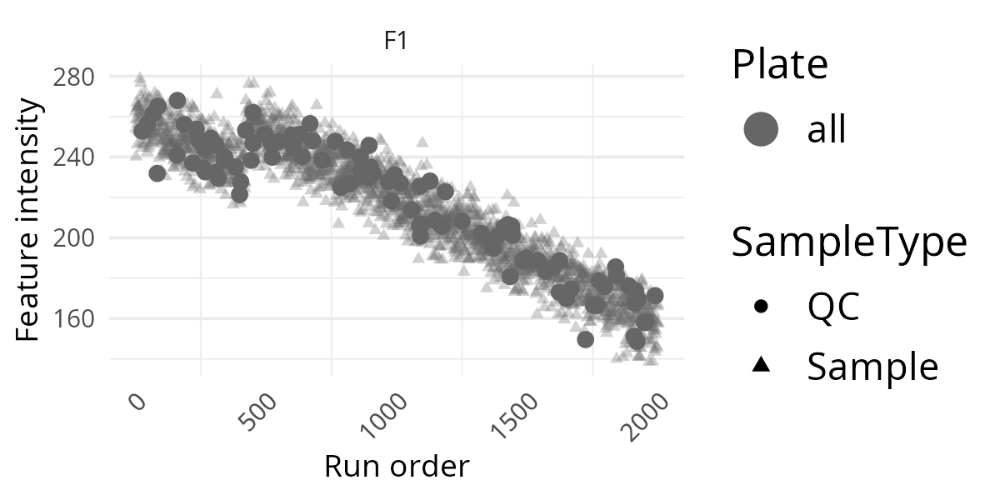
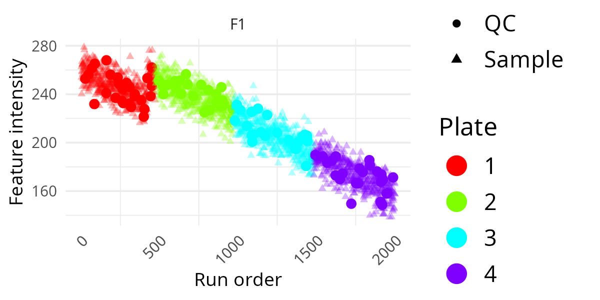
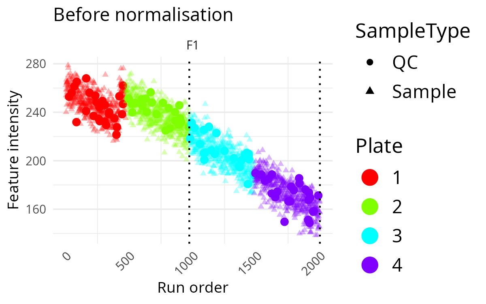
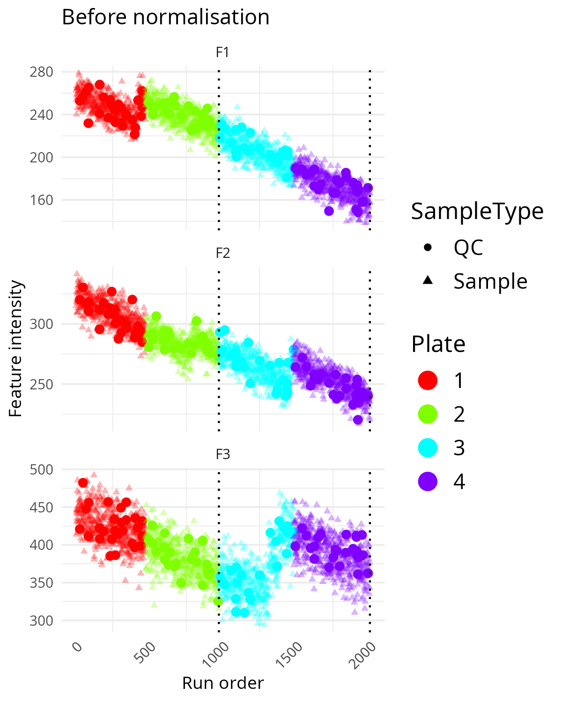
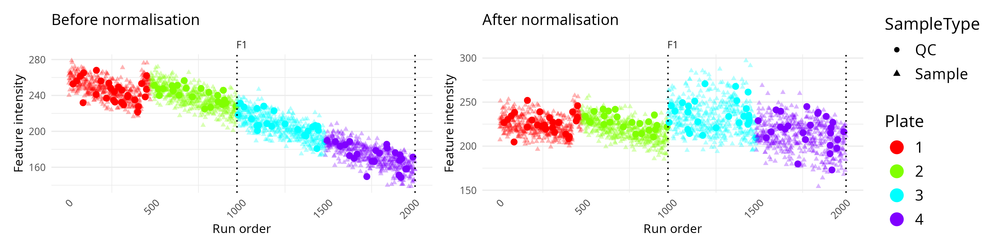
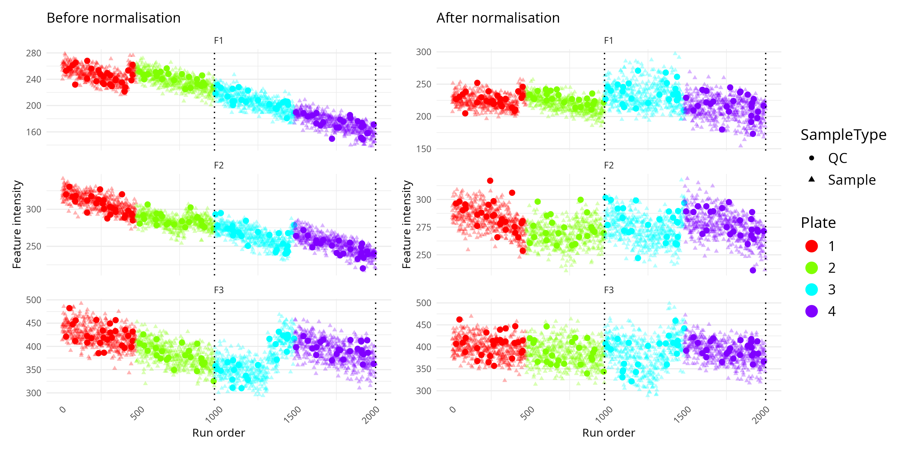

Normalisation plot comparison
plot-omics-distributions.RmdOverview
This vignette shows how to use
OmicsProcessing::plot_omics_distributions() to inspect how
one or more features behave across run order.
These plots are useful when you want to answer practical questions such as:
- Do measurements drift over time during the run?
- Do QC samples behave differently from study samples?
- Are there visible plate or batch effects?
- Does normalisation reduce unwanted technical structure?
You do not need to prepare your own data to follow this vignette. The
package contains a built-in synthetic example data set called
omics_synthetic.
Reproducible data-generation code for omics_synthetic is
available in the source repository at
data-raw/omics_synthetic.R. After package installation, you
can locate the installable copy with:
Function reference
for build_omics_synthetic()
system.file("scripts", "omics_synthetic.R", package = "OmicsProcessing")Load example data
data("omics_synthetic", package = "OmicsProcessing")
omics_syntheticThe example data contains:
-
F1toF10: feature intensity columns -
run_ord: the injection or acquisition order -
is_qc: a logical column indicating QC samples -
plate_id: plate membership -
batch_id: batch membership
In practice, your own data should contain the same kind of information, even if your column names are different. The plotting function lets you specify your own column names explicitly, so your data does not need to look exactly like this example.
Plot Feature Distributions With Minimal Inputs
The smallest useful call needs only:
- a data frame,
- one or more feature columns, and
- a run-order column.
p <- OmicsProcessing:::plot_omics_distributions(
df = omics_synthetic,
target_cols = "F1",
run_order = "run_ord"
)
pThis first version is a good screening plot. It lets you see whether the feature stays roughly stable over the analytical run or whether it shows drift or sudden shifts. For a first check of a new data set, this is often the best place to start because it keeps the display simple.
Add Information Layers
The same plot becomes much more informative once you add sample annotations. The following examples build up the plot step by step.
Add QC Indicator
If your data contains QC samples, adding is_qc helps
distinguish technical control samples from study samples.
p <- OmicsProcessing:::plot_omics_distributions(
df = omics_synthetic,
target_cols = "F1",
run_order = "run_ord",
is_qc = "is_qc"
)
pThis is often the most informative extra layer. If QC points follow a clear trend across run order, that usually suggests technical drift rather than a biological effect.

Add Plate Information
If samples were measured across different plates, colouring by plate can reveal plate-to-plate shifts.
p <- OmicsProcessing:::plot_omics_distributions(
df = omics_synthetic,
target_cols = "F1",
run_order = "run_ord",
is_qc = "is_qc",
plate = "plate_id"
)
pThis is useful when you suspect systematic differences between laboratory processing groups. If one plate forms a visibly separate pattern, that may indicate a technical rather than biological source of variation.

Add Batch Information And A Title
If you also provide a batch column, the function draws dotted vertical lines at batch boundaries.
p <- OmicsProcessing:::plot_omics_distributions(
df = omics_synthetic,
target_cols = "F1",
run_order = "run_ord",
is_qc = "is_qc",
plate = "plate_id",
batch = "batch_id",
title_ref = "Before normalisation"
)
pThis makes it easier to spot abrupt changes that happen at batch transitions rather than gradually over time. A sharp level change at a batch boundary is often a sign that batch correction may be needed.

Plot Multiple Features
You can inspect several features at once by supplying multiple feature names.
p <- OmicsProcessing:::plot_omics_distributions(
df = omics_synthetic,
target_cols = c("F1", "F2", "F3"),
run_order = "run_ord",
is_qc = "is_qc",
plate = "plate_id",
batch = "batch_id",
title_ref = "Before normalisation"
)
pThis is a useful compromise between single-feature inspection and a full multivariate summary. It helps identify whether technical problems are restricted to one feature or shared across several. If several features show similar drift or step changes, the pattern is more likely to be a technical artefact.

Compare Feature Distributions Before And After Normalisation
This function is especially useful when you want to compare a raw or pre-processed data set against a normalised version.
Typical preparation steps are:
- filter features and samples,
- impute missing values if needed,
- normalise the data, and
- compare the before/after distributions.
target_features <- c("F1", "F2", "F3")
df_imputed <- omics_synthetic
df_normalised <- OmicsProcessing::normalise_SERRF(
df_imputed,
target_cols = target_features,
is_qc = df_imputed$is_qc,
strata_col = "batch_id"
)
OmicsProcessing:::plot_omics_distributions(
df = df_imputed,
df_comp = df_normalised,
target_cols = target_features,
run_order = "run_ord",
is_qc = "is_qc",
batch = "batch_id",
plate = "plate_id",
title_ref = "Before normalisation",
title_comp = "After normalisation"
)If you want a simpler visual comparison first, you can start with a single feature and then expand to several features once you understand the overall behaviour.
OmicsProcessing:::plot_omics_distributions(
df = df_imputed,
df_comp = df_normalised,
target_cols = "F1",
run_order = "run_ord",
is_qc = "is_qc",
batch = "batch_id",
plate = "plate_id",
title_ref = "Before normalisation",
title_comp = "After normalisation"
)
In this comparison mode, the left panel usually represents the original data and the right panel the corrected data. You can then judge whether the normalisation has reduced technical drift while keeping the overall signal structure plausible.
This can also plot multiple columns and compare them like so:
target_features <- c("F1", "F2", "F3")
OmicsProcessing:::plot_omics_distributions(
df = df_imputed,
df_comp = df_normalised,
target_cols = target_features,
run_order = "run_ord",
is_qc = "is_qc",
batch = "batch_id",
plate = "plate_id",
title_ref = "Before normalisation",
title_comp = "After normalisation"
)
Interpretation Tips
- A smooth trend in QC samples across run order often indicates technical drift.
- Sudden jumps at batch boundaries suggest batch effects.
- Plate-specific colour clusters may indicate plate effects.
- After successful normalisation, QC samples often look more stable across the run.
- If the corrected plot looks overly distorted or compressed, inspect the normalisation settings before proceeding.
If you are using SERRF for correction, see the related vignette: Batch correction using SERRF.
Reproducing The Example Data
The example data set can be regenerated from the package source.
Function reference
for build_omics_synthetic()
source("data-raw/omics_synthetic.R")If you want to inspect or modify the generator first, use:
Function reference
for build_omics_synthetic()
generated <- build_omics_synthetic(seed = 1)
str(generated$omics_synthetic)
head(generated$jump_info)For most users, the packaged omics_synthetic data will
be enough for learning and testing. The generator is mainly useful if
you want to change the simulation settings or create additional
benchmark examples.